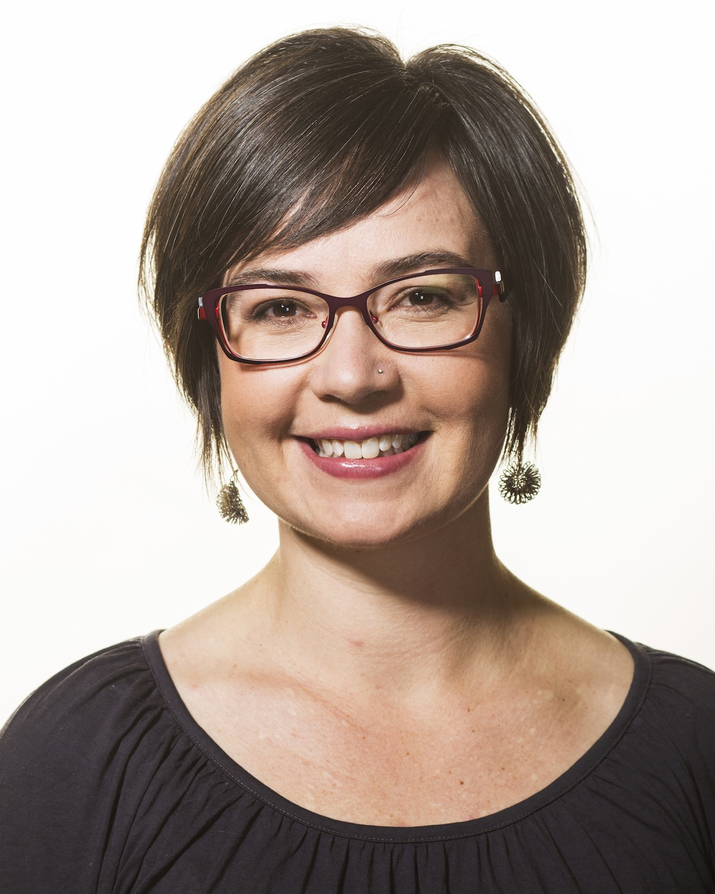
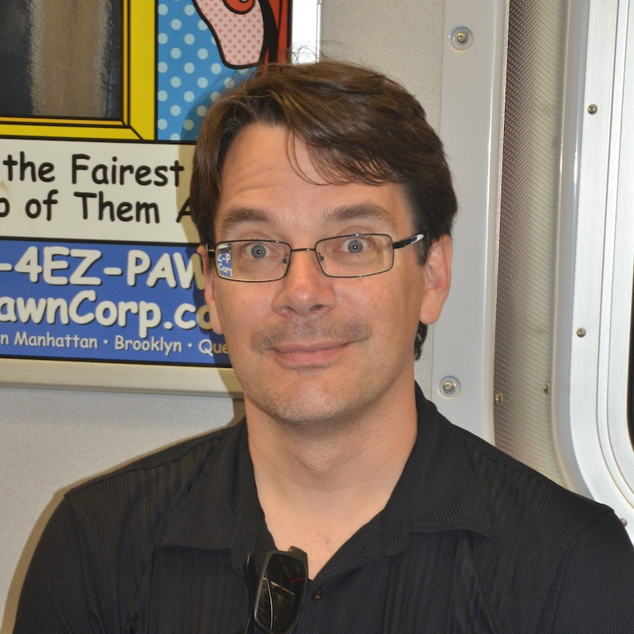

August 19-21, 2015
7th International Workshop
on Bio-Design Automation
Looking for IWBDA 2016?
Prooceedings now available.
About IWBDA
The Seventh International Workshop on Bio-Design Automation (IWBDA) will bring together researchers from the synthetic biology, systems biology, and design automation communities to discuss concepts, methodologies and software tools for the computational analysis and synthesis of biological systems.
The field of synthetic biology, still in its early stages, has largely been driven by experimental expertise, and much of its success can be attributed to the skill of the researchers in specific domains of biology. There has been a concerted effort to assemble repositories of standardized components; however, creating and integrating synthetic components remains an ad hoc process. Inspired by these challenges, the field has seen a proliferation of efforts to create computer-aided design tools addressing synthetic biology's specific design needs, many drawing on prior expertise from the electronic design automation (EDA) community. The IWBDA offers a forum for cross-disciplinary discussion, with the aim of seeding and fostering collaboration between the biological and the design automation research communities.
IWBDA is organized by the non-profit Bio-Design Automation Consortium (BDAC). BDAC is an officially recognized 501(c)(3) tax exempt organization.
Topics of interest include:
- Design methodologies for synthetic biology.
- Standardization of biological components.
- Automated assembly techniques.
- Computer-aided modeling and abstraction techniques.
- Engineering methods inspired by biology.
- Domain specific languages for synthetic biology.
- Data exchange standards and models for synthetic biology.
Venue
The events Wednesday will take place at Kane Hall, Room 210, 4069
Spokane Lane, Seattle, WA.
The workshop on Thursday and Friday will
take place at the Husky Union Building, Ballroom, 4001 East Stevens
Way, Seattle, WA.
The dinner Thursday night will be at
The University of Washington Club, 4020 East Stevens Way, Seattle, WA.
Finally, the dorm address is Lander Hall, 1201 Northeast Campus Parkway, Seattle, WA.
ACS Synthetic Biology IWBDA 2015 Special Issue
We would like to invite all attendees to submit original work to the ACS Synthetic Biology “IWBDA 2015” Special Issue. ACS Synthetic Biology has the highest editorial standards, offers rapid publication of your research findings and imposes NO author submission, page, color, or cover art charges. We are looking for high quality submissions, for peer-review, as either short Letters or full-length Articles. The submission deadline is September 30, 2015.
If you wish to submit your research to the ACS Synthetic Biology “IWBDA 2015” Special Issue, please see the ACS Synthetic Biology Invitation for instructions on preparing your manuscript.
Key Dates
- Workshop: August 19-21, 2015
- Abstract submission deadline: April 17, 2015
- Late-breaking posters submission deadline: June 10, 2015
- Late-breaking posters author notification: June 17, 2015
- Late-breaking posters camera ready: June 24, 2015
Registration
Please contact us with any registration questions.
Accommodations
Watertown Hotel
Method of Reservation: Individuals call-in. Guests must e-mail reservations@staypineapple.com or call 866.866.7977 before July 22, 2015 to secure their guest rooms. Guests should reference “IWBDA Conference” to receive the group rate.
Arrival Date: Tuesday, August 18, 2015
Departure Date: Saturday, August 22, 2015
Guest Room Rates: $190.00 (single/double occupancy)
Additional Guests: $20.00 each (triple/quad occupancy)
Each room has 2 queen beds.
This hotel is about a 10-15 minute walk to the venue. You can also request a ride on the free hotel shuttle.
Stay tuned for more details.
Dorm Rooms
Book onlineReservations and full payment must be submitted no later than Tuesday, June 28, 2015. Reservations received after this date are charged a $25.00 Late Reservation Fee and are only processed on a space-available basis.
PACKAGE DESCRIPTION
Housing services are offered as a package
plan for fixed dates and may not be altered. There is no credit for
shorter stays or unused dining allotments. Reservations are
nontransferable. Each guest must fill out a separate reservation form
and submit payment. The rates below are for two nights stay from
Thursday, August 20-Saturday, August 22, 2015.
Package Rates (per person, not per room):
$123.00 Double Occupancy
$195.00 Single Occupancy
Package Includes:
Two nights of housing
$20.00 nonrefundable Housing Reservation Fee
EARLY ARRIVALS/LATE DEPARTURES
Limited Early Arrival and Late Departure housing is available at an
additional charge. Meals are not included. There is no refund for
canceled Early Arrival or Late Departure nights after the reservation
deadline date.
Early Arrival Housing: Night(s) of Tuesday, August 18 and Wednesday, August 19, 2015
Late Departure Housing: Night(s) of Saturday, August 22 and Sunday, August 23, 2015
Rates (per person, per night):
$61.50 Double Occupancy
$97.50 Single Occupancy
ACCOMMODATIONS
Conference guests will reside in double- or
single-occupancy rooms with private baths. All rooms are furnished
with twin-size beds, desks, nightstands, dressers, bedding, towels, a
small fan, soap, toilet paper and drinking cups. Telephones providing
Conference guests with free local service are available at the
Conference Desk. University of Washington residence halls are
passively ventilated and not air conditioned. Hardwired Ethernet
access is available in sleeping rooms for those who bring their
computers (Ethernet cord required). University of Washington wireless
access is available in all public areas of campus and is also
accessible in guest rooms. The required log in and password are issued
by the Conference Desk.
Sponsors
Design

Workflow

Class
Algorithm


Information about sponsorship is available here.
Keynote Speakers
Miriah Meyer
Dr. Miriah Meyer is a USTAR assistant professor in the School of Computing at the University of Utah and a faculty member in the Scientific Computing and Imaging Institute. Her research focuses on the design of visualization systems for helping researchers make sense of complex data. She obtained her bachelors degree in astronomy and astrophysics at Penn State University, and earned a PhD in computer science from the University of Utah. Prior to joining the faculty at Utah Miriah was a postdoctoral research fellow at Harvard University and a visiting scientist at the Broad Institute of MIT and Harvard.
Miriah is the recipient of a NSF CAREER grant, a Microsoft Research Faculty Fellowship, and a NSF/CRA Computing Innovation Fellow award. She was named both a TED Fellow and a PopTech Science Fellow, as well as included on MIT Technology Review's TR35 list of the top young innovators and Fast Company's list of the 100 most creative people. She was also awarded an AAAS Mass Media Fellowship that landed her a stint as a science writer for the Chicago Tribune.
Eric Klavins
Dr. Eric Klavins is an associate professor of electrical engineering at the University of Washington in Seattle. He received a B.M. in Music in 1992 and a B.S. in computer science in 1996 from San Francisco State University. He received the M.S. and Ph.D. degrees in computer science and engineering in 1999 and 2001 from the University of Michigan, Ann Arbor. From 2001 to 2003 he was a postdoctoral scholar in the Control and Dynamical Systems Department at the California Institute of Technology where he worked with Richard Murray. In 2003 Eric was hired in Electrical Engineering at the University of Washington in Seattle, WA and received tenure in 2009. He holds adjunct appointments in Computer Science and Engineering and in Bioengineering and is the Director for the UW Center for Synthetic Biology.
Until approximately 2008, Klavins' research was primarily in computer science and control systems, focusing on stochastic processes, robotics and self-assembly. At about this time, he learned the basics of genetic engineering of the next few years switched entirely fields to synthetic biology and now runs an interdisplinary group of engineers, biologists, experimentalists, and theorists -- all focused on engineering life. His current projects include synthetic multicellular systems with engineered bacteria and yeast, modeling and design for synthetic multicellular systems, and laboratory automation.
Scholarships
IWBDA Scholarships are available for students, postdocs, and young researchers. Applications received by May 15, 2015 will be given first consideration. Applications after that date will be handled as funds allow. Please see this PDF for details on how to apply.
Submit to "IWBDA 2015 Scholarship" on the Easy Chair site. Your submission (as an abstract or attached pdf document) must include the following:
- Your name and email address
- Your school and year of study (e.g., junior, 2nd year graduate student, postdoc)
- A brief summary of your scientific research and work experience
- Your expected travel expenses
- A short statement (about 100 words) detailing why you seek support and how you plan to participate in the workshop (oral presentation, poster, etc.)
We are pleased to announce that the recipient of the 2015 (and inaugural) Allan Kuchinsky Internation Workshop on Bio-Design Automation Scholarship is Dr. Swapnil Bhatia. The 2015 scholarship has been generously sponsored by Cytoscape.
Call for Papers
Abstracts should be two pages long and referenced, following the ACM SIG Proceedings templates at www.acm.org/sigs/publications/proceedings-templates. Inclusion of figures is encouraged. Indicate whether you would like your abstract considered for a poster presentation, an oral presentation, or both. Include the full names, affiliations and contact information of all authors. Abstracts should be submitted in pdf format and should not exceed two pages.
Abstracts will be reviewed by the Program Committee. Those that are selected for oral and poster presentations will distributed to workshop participants and posted on the workshop website.
Call For Abstracts full pdf
Access your submitted abstract at www.easychair.org/conferences/?conf=iwbda2015
Late-breaking poster submission is now open.
Submit your late-breaking poster at www.easychair.org/conferences/?conf=iwbda2015
Posters
Posters should be in a horizontal orientation, 40 inches wide by 30 inches tall.
Organizing Committee
Contact us at: iwbda-exec AT lists.bio-design-automation.org
- General Chair - Douglas Densmore, Boston University
- Finance Chair - Traci Haddock, iGEM Foundation
- Program Committee Chair - Jacob Beal, BBN Technologies
- Local Chair - Eric Klavins, University of Washington
- Local Chair - Traci Haddock, iGEM Foundation
- Web Chair - Aaron Adler, BBN Technologies
- Publication Chair - Swati Carr, Boston University
Program Committee
- Shota Atsumi - University of Califronia, Davis
- Swapnil Bhatia - Boston University
- Bryan Der - Massachusetts Institute of Technology
- Barbara Di Ventura - University of Heidelberg
- Michal Galdzicki - Arzeda Corp.
- Soha Hassoun - Tufts University
- Nathan Hillson - Joint BioEnergy Institue
- Natasa Miskov-Zivanov - Carnegie Mellon University
- Chris Myers - University of Utah
- Dimitris Papamichail - The College of New Jersey
- Cesar Rodriguez - Autodesk
- Nicholas Roehner - Boston University
- Herbert Sauro - University of Washington
- Guy-Bart Stan - Imperial College London
- Darko Stefanovic - University of New Mexico
- Ilias Tagkopoulos - University of Califronia, Davis
- Sean Ward - Synthace
Email List
Sign up for the announcements email list here.
Related Synthetic Biology Conferences
- The Second International Workshop on Mammalian Synthetic Biology (mSBW2.0) Conference: April 25-26, 2015 in Cambridge, MA
- Synthetic Biology: Engineering, Evolution & Design (SEED) Conference: June 10-13, 2015 in Boston, MA
- Towards Programmable Biology (ToProB) Satellite Workshop at ECAL 2015: July 20, 2015 in York, UK
- iGEM 2015 Competition and Giant Jamboree September 24-28,2015 in Boston, MA
Past Years
- 7th International Workshop on Bio-Design Automation (IWBDA 2015): Seattle, WA, August 19-21, 2015
- 6th International Workshop on Bio-Design Automation (IWBDA 2014): Boston, MA, June 11-12, 2014
- 5th International Workshop on Bio-Design Automation (IWBDA 2013): Imperial College, London, UK, July 12-13, 2013
- 4th International Workshop on Bio-Design Automation (IWBDA 2012): Moscone Center, San Francisco, CA, July 3-4, 2012
- 3rd International Workshop on Bio-Design Automation (IWBDA 2011): San Diego Convention Center, San Diego, CA, June 6-7, 2011
- 2nd International Workshop on Bio-Design Automation (IWBDA 2010): Anaheim, CA, June 14-15, 2010
- 1st International Workshop on Bio-Design Automation (IWBDA 2009): Moscone Center, San Francisco, CA, July 27, 2009